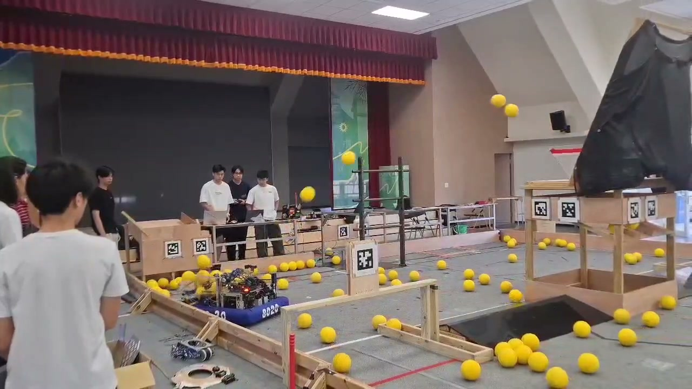

01 / Competition robotics2026 season
Shoot on the Move
Ballistics and velocity compensation for aiming while driving.
FRC Team 8020Modeling + controls
Explore Shoot on the Move 
Robotics · Controls · Flight systems
I’m Po Chun Tseng. I build robots and flight systems, then work through the gap between the model and the real machine.
Explore my workSelected work / 01—03
Three systems.
A closer look at the engineering.
Ballistics and velocity compensation for aiming while driving.


A custom PX4 platform, from mechanical design to onboard vision. Autonomy is under development.
Explore the delivery drone
Combining AprilTag observations and odometry into one pose estimate.
Explore robot localizationThe engineering journey
From recognizing game pieces to estimating motion and controlling machines in the real world.
Inside the FRC workCollecting images, labeling game pieces, and testing a detector beyond its validation scores.
Contributing to a team migration from LabVIEW to Java, integrating subsystems and debugging command conflicts.
Combining camera observations and odometry into a shared estimate of robot pose.
Connecting measured shots, simulated trajectories, and chassis velocity to aiming setpoints.
Building and tuning a PX4 drone, with onboard vision and autonomy under development.
On the workbench
Smaller builds and ongoing investigations.
ESP32 mecanum robot with Bluetooth manual control. LiDAR following is the next milestone.
HardwareA working standalone monitor conversion, with a custom enclosure still to finish.
SoftwareApps built with AI coding assistance to organize projects, take notes, analyze flight logs, and study more efficiently.
Engineering in Motion / YouTube + Instagram
Short engineering explainers, built with simulation, animation, and an AI-assisted production workflow.
Explore the channelApprox. combined views
Followers + subscribers
Across YouTube + Instagram · October 2026
A little about how I work
My projects span robotics, controls, hardware, and software. I’m interested in what happens when those pieces have to work together.
This portfolio follows the decisions, debugging, and iterations behind the builds, including what works today and what I’m still figuring out.
Follow the journey